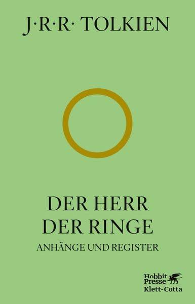

"Wenn du etwas wirklich willst, dann wird das ganze Universum dazu beitragen, dass du es erreichen kannst."
- Paulo Coelho
Entdecken Sie eine Vielfalt an Bücher...
"Wenn du etwas wirklich willst, dann wird das ganze Universum dazu beitragen, dass du es erreichen kannst."
- Paulo Coelho
"Als Gregor Samsa eines Morgens aus unruhigen Träumen erwachte, fand er sich in seinem Bett zu einem ungeheuren Ungeziefer verwandelt."
- Franz Kafka

"Nicht alle, die wandern, sind verloren."
- J.R.R. Tolkien